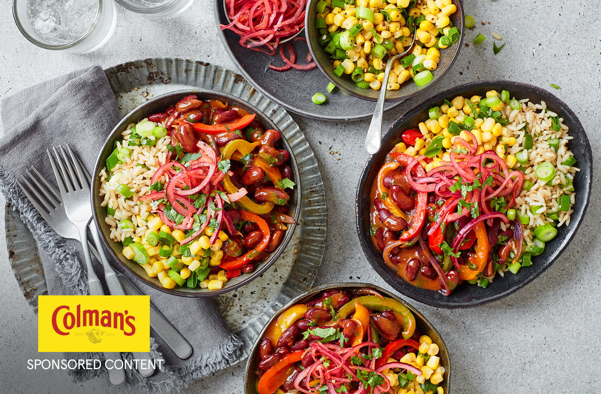

Chilli Burrito Bowl

Description
Feed the whole family with this chilli burrito bowl recipe. Ready and on the table in just 30 minutes, it's a comforting dish you can make at moment's notice.
Ingredients
- 240g easy-cook brown rice
- 5 spring onions, finely sliced
- 2 tbsp olive oil
- 3 red onions, thinly sliced
- 1 lime, zested and juiced
- 1 tsp caster sugar
- 375g pack peppers, deseeded and sliced
- 2 garlic cloves, crushed
- 50g pack Colman’s chilli con carne recipe mix
- 2 x 400g tins kidney beans, drained and rinsed
- 325g tin sweetcorn in water, drained
- 30g pack fresh coriander, roughly chopped
Steps
- Cook the rice to pack instructions, drain and return to the pan. Stir through 3 spring onions and 1 tbsp oil. Set aside and keep warm.
- Meanwhile, place one-third of the sliced onions in a small bowl with 1 tbsp lime juice and the sugar; season. Set aside to pickle while you prepare the chilli.
- Heat the remaining oil in a large frying pan over a medium heat. Add the remaining red onions and the peppers and cook for 10 mins, stirring occasionally, until slightly softened. Add the garlic and cook for 1 min.
- Add the Colman’s chilli con carne recipe mix to the pan with 250ml water. Stir to combine, then bring to a simmer and cook for 5 mins or until thickened. Stir through the kidney beans and simmer for a further 5 mins. Stir through most of the coriander.
- Add the sweetcorn to a bowl, stir in the remaining lime juice and the zest and 2 of the spring onions.
- Divide the rice between 4 bowls and spoon over the chilli. Add the corn salsa and top with the pickled onions and remaining coriander.